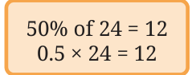
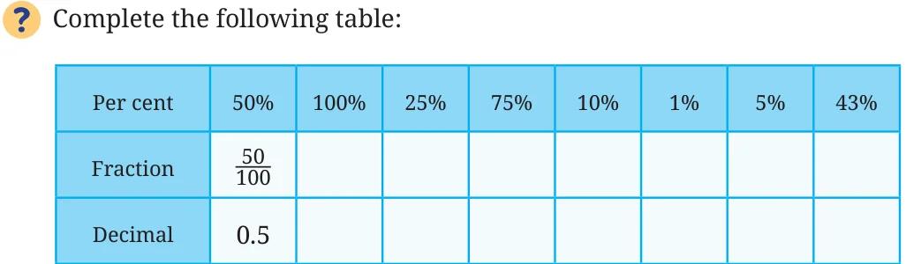
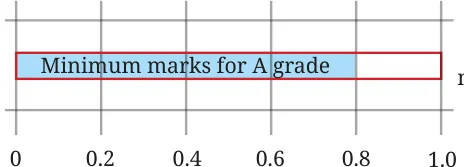
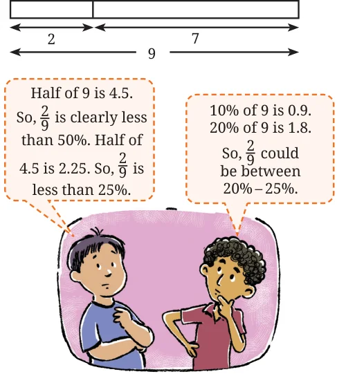
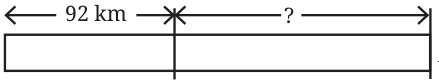
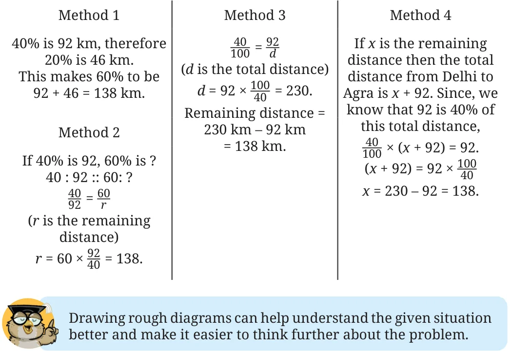

Example 2: We can find 50% of a value by multiplying \(\frac{1}{2}\) with the value. Will multiplying the value by 0.5 also give the answer for 50% of the value? Yes, since \(\frac{1}{2} = 0.5\). \(50% = \frac{50}{100} = \frac{1}{2} = \frac{0.5}{1} = 0.5\).

Similarly, to find 10% of a quantity, what decimal value should be multiplied?

Activity: How Close Can You Get?
Make a pair. Each of you choose a number. Suppose, the numbers chosen are a and b. Share your numbers with each other. Both of you should estimate the percentage equivalent to the fraction \(\frac{a}{b}\) (where \(a <\) b) and announce your answers by a fixed time, say, 5 seconds. The one whose estimate is the closest wins this round. Play this for 10 rounds.
Example 3: The maximum marks in a test are 75. If students score 80% or above in the test, they get an A grade. How much should Zubin score at least to get an A grade? We can find 80% of 75 in different ways, using our understanding of fraction and decimal multiplication, as well as of proportionality.
Fraction Multiplication \(\to \frac{80}{100} \times 75\)

\(= \frac{4}{5} \times 75 = 60\). marksTotal
Decimal Multiplication \(\to 0.8 \times 75 = 60\). Proportional Reasoning \(\to\) Out of 100, the minimum mark is 80.
Out of 75, it is
\(\frac{75 \times 80}{100} = 60\).
Example 4: To prepare a particular millet kanji (porridge), suppose the ratio of millet to water to be mixed for boiling is 2:7. What percentage does the millet constitute in this mixture? If 500 ml of the mixture is to be made, how much millet should be used? This situation can be modelled as shown in the bar model on the right side. The ratio of millet to the volume of the mixture is 2:9. In other words, in one unit of the mixture, millet occupies \(\frac{2}{9}\) units and water occupies \(\frac{7}{9}\) units. Estimate first what percentage \(\frac{2}{9}\) would be. The percentage (i.e., in 100 such units) of millet in the mixture is

\(\frac{2}{9} \times 100 = 22.22%\).
The percentage of water in the mixture will
be \(100 - 22.22 = 77.78%\).
A mixture with 22.22% millet means 100 ml mixture will have 22.22 ml millet. Therefore, 500 ml with 22.22% millet will have \(5 \times 22.22 = 111.1\) ml of millet.
A given ratio can be converted to a fraction, and then to a percentage.
The practice of estimating first before calculating can improve number sense and help reduce mistakes. Often, we may not need exact values. The ability to make quick estimates is useful at these times.
Note to the Teacher: Incorporate the practice of estimating before calculating or solving as part of the problem-solving process. You may remind and encourage students as needed.

Example 5: A cyclist cycles from Delhi to Agra and completes 40% of the journey. If he has covered 92 km, how many more kilometres does he have to travel to reach Agra? Let us first try to model this situation by a bar model. Delhi _{Agra}

Estimate first before solving further. A few ways of solving this problem are shown below. Does your method match any of the given ones? Do you like any of the other methods? It is given that 40% of the distance is 92 km. We have to find out how much the rest of the 60% distance is.
